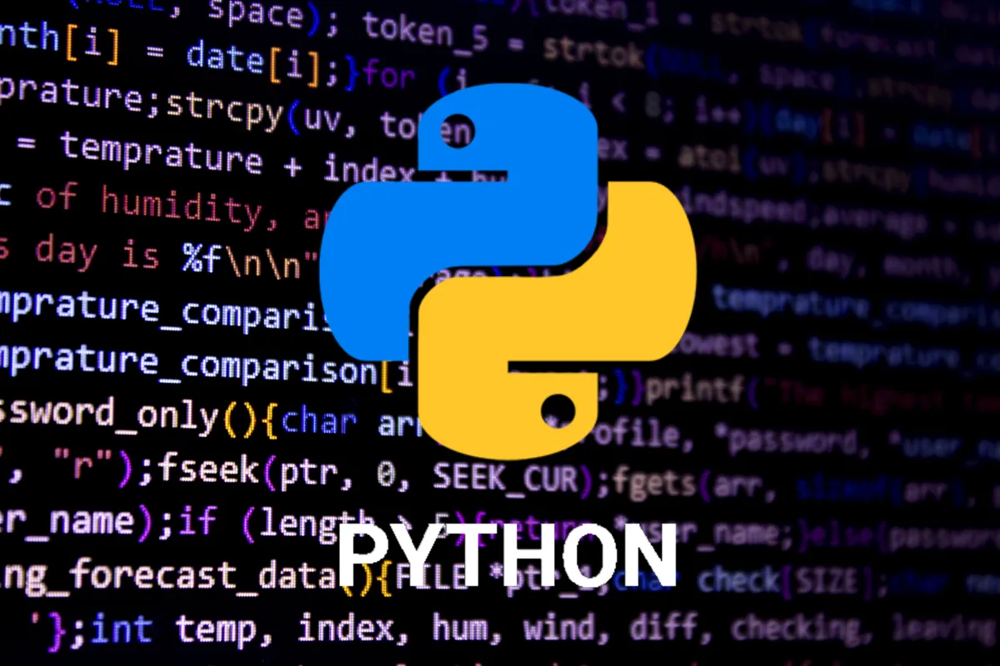

¿Qué es python?
Python es un lenguaje de programación de alto nivel, versátil y fácil de aprender. Creado por Guido van Rossum, se destaca por su sintaxis clara y legible, lo que facilita la escritura de código conciso y mantenible. Su filosofía se basa en la legibilidad y la simplicidad, favoreciendo la productividad y la facilidad de uso.
Además de su elegancia sintáctica, Python cuenta con una amplia comunidad de desarrolladores que contribuyen constantemente a su crecimiento. Es utilizado en una variedad de campos, desde desarrollo web y ciencia de datos hasta inteligencia artificial. La amplia gama de bibliotecas y frameworks disponibles hace que Python sea una opción poderosa y flexible para proyectos de cualquier escala.
En resumen, Python es más que un lenguaje de programación: es una herramienta que fomenta la creatividad y la eficiencia en el desarrollo de software.
Mi trayectoria con Python
Mi viaje en el mundo de la programación comenzó hace ocho años, y Python fue mi puerta de entrada. Fascinado por su sintaxis clara y su enfoque en la legibilidad, decidí sumergirme en este lenguaje versátil. Desde entonces, he construido una sólida trayectoria utilizando Python en diversos proyectos.
A lo largo de los años, he experimentado con desarrollo web, automatización de tareas y análisis de datos. Python se ha mantenido a mi lado, adaptándose a cada desafío. Fue el compañero perfecto en mi exploración de la inteligencia artificial y el aprendizaje automático, gracias a bibliotecas como TensorFlow y scikit-learn.
Lo más notable de mi trayectoria con Python es su capacidad para evolucionar con mis necesidades. Desde mis primeros días de aprendizaje hasta proyectos más avanzados, la flexibilidad y la comunidad vibrante de Python han sido fundamentales. Hoy, mirando hacia atrás, veo en Python no solo el primer lenguaje que aprendí, sino un socio constante en mi crecimiento como desarrollador.